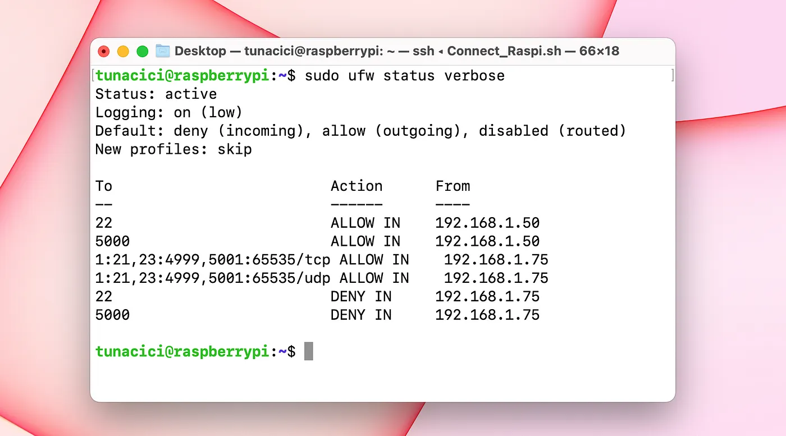
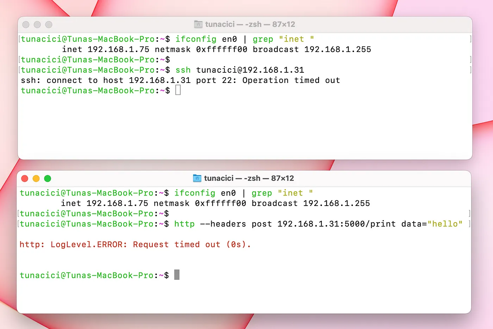

Linux Networking ELI5 — Part 3, Ports, TCP/IP & Firewalls
Welcome to the part 3 of my Linux Networking ELI5 series! In the previous article, we have talked about IP addresses, the idea behind the NAT and DHCP servers.
Today’s stars are TCP/IP model, ports and firewalls. We will try to answer what they are, how do they work and how to use them in our Linux machines. Unlike the previous articles, this one will be more software centric. Meaning, there will be many terminal commands and practical examples.
If you have missed the previous parts you can check them out from the using the links below.
Navigate to Part 1 — Networks & Interfaces
Navigate to Part 2 — IP, NAT & DHCP
Navigate to Part 3 — Ports, TCP/UDP & Firewalls
Navigate to Part 4 — Minecraft & HTTP Server
TLDR;
TCP/IP Model: An architecture that is used when sending packets through a network
Application Layer: Represents the type/protocol of a packet (ex. HTTP)
Transport Layer: Represents the method/protocol used for delivering a packet (ex. UDP)
Internet Layer: Represents the protocol used for routing a packet in a network (ex. IP)
Network Access Layer: Represents the hardware used for delivering a packet (ex. Wi-Fi)
Ports: Virtual sockets that allows an IP to be used by many software apps in an OS
ss: A Linux command that is used to monitor ports
UDP: A protocol that delivers packets without any checks (fast, but not realiable))
TCP: A protocol that delivers packets in a controlled way (slower, but reliable)
WireShark: A program that is used to monitor packets for a network interface
Firewall: A software/hardware layer that filters incoming/outgoing packets in an OS
The Setup
I have setup an example network using my personal machines (local & cloud). This way I can give better visual examples and help you in this journey.

My Basic Network Setup
I have two local machines that are connected to each other via my home router. One machine is Apple’s Macbook Pro running macOS Ventura 13.1 and the other one is my faithful Raspberry Pi 4b running Ubuntu Server 22.04.
I also have an Oracle Cloud machine running the same os as my Raspberry: Ubuntu Server 22.04. I hid it’s public IP address due to privacy and security concerns.
A Story
I want you to do something. Imagine that you are the captain of a big ship. You travel across oceans to deliver valuable cargo. You visit many different countries. UK, Italy, Greece, India, Japan… you name it.
Now, every time you visit one, you park your ship on that country’s port. You load up the cargo and departure from the port to begin your journey. After crossing the ocean and fighting with big waves, you finally arrive at the destination country and park your ship at it’s port. The crew there then will unload your cargo and in the end you will get your reward (sweet money)!
A Cargo Ship Approaching the Port — Source: unsplash.com by william07
Let’s simplify this journey by making a step-by-step analysis.
- Load the cargo onto the ship (Application & IP Layer)
- Departure from the port (Transportation Layer)
- Journey through oceans and big waves (Network Access Layer)
- Arrive at the destination port (Transportation Layer)
- Unload the cargo from the ship (Application & IP Layer)
- Get rewarded! (Packet Recieved!)
I want you to come back to this story, when you have finished reading this article;)
Now, these steps are important and will guide us throughout this article when we are talking about ports, firewalls and many more. I will make direct comparisons to this story and hope that it will make you understand everything better.
TCP/IP Model
Following from the previous articles, we learned networks and successfully joined them. Now, it’s time to connect to other devices and do some networking.
When we talk to other devices in a network, we send them messages called packets. These packets can be a simple text like ‘Hello Jon’, an encrypted username and password for your Reddit login or a photo that you want to post on Instagram. Whatever the type of the message, they are all treated as packets in a network.
To send a packet through the network, we need to package them so the Linux can know how and where to send it. There are many packaging that happens to your packets before they are sent over the network. First, check out the below picture.
TCP/IP Model (Middle) — Source: imperva.com
This picture is a VERY POPULAR networking model that shows us how our packet is packaged and sent over the network. For the ELI5 purposes we will focus on the TCP/IP model. And go over each of these 4 layers.
Think of the TCP/IP model as a guideline for ship captains. We need to know about this model in order to get our captain license!
Ports (Application Layer)
How you ever wondered how you can browse, watch Netflix, play online games and all kinds of networking stuff WHILE using a single IP address? How is that my Spotify stream is not mixing up with my Overwatch game? Well, the answer is ports!
I Can Stream Music, Download a File and Play Online Games Using The Same IP
Ports are network endpoints in Linux (and other operating systems). Linux assigns ports to each IP address in order to separate programs that uses the same IP address. For example; 2 different programs can use the same IP address, but they will use 2 different ports so that their connections are not mixed together.
Think of our ‘captain’ story. There can be many ports in a country. One port can be used for delivering cars and other can be for food and etc.
You can’t unload a Bugatti cargo to a fishing port.
Ports are numbered from 0 to 65535. So in total, we have 65535 different ports to choose from and each one of them is used for a different purpose. Here’s some of the most commonly used ports numbers.
21: Used for transfering files (FTP)
22: Used for secure shell connections (SSH)
80: Used for browsing the web (HTTP)
443: Used for securily browsing the web (HTTPS)
587: Used for sending/recieving emails (SMTP)
Depending on the application’s purpose (web server, game server) different ports will be used. For example; almost all web servers uses the port number 443 or a typical Minecraft server will be using the port number 25565. But there are so many different ports, how do we choose which one to use?
There are currently 3 categories for port numbers. These are:
0 - 1023: Most commonly used ports (HTTPS, FTP, SSH and etc)
1024 - 49151: Custom ports for specific apps (Game servers, Video streamning)
49152 - 65535: Dynamic ports for temporary connnections (When requesting smth.)
Most of the time we will be using the ports 0–1023. The rest are for custom applications and system related ports.
Alright ports are cool and all, can I see which ports are in use on my Linux? Of course you can! Check out the command ‘ss’.
# The 'ss' command has some options
# -a Shows all connections (listening or not)
# -n Show IP and Port numbers (do not resolve DNS)
# -t Show TCP connections
# -u Show UDP connections
$ ss <OPTIONS>

‘ss’ Command Output
Here you can see that using the ‘ss’ command, we can get a pretty good amount of information about Linux network ports. Let’s analyze the output and discuss about them.
Starting from the left, we can see the ‘netid’ column. This can be either of the two values ‘udp’ or ‘tcp. We will talk about them soon enough. On it’s left we got the ‘state’ column. This tells us about the connection status. A port can be listening for connections and/or keeping a connection alive.
Recv-Q and Send-Q are waiting queues. This tells that how much data is waiting in the queue for that specific port.
Now we come to the important columns. Each network connection happens between two machines (we know this already). These machines have IPs and programs that makes the actual connection. We can see from the ‘ss’ command that which IP addresses are connected and in which ports.
Every IP Address Must be Followed by a Port Number or Preceded by a Protocol Name
From the ‘ss’ command output look at the line from the second bottom. It shows my current SSH connection. Local address is 192.168.1.31:22. It’s the SSH server. Peer address is 192.168.1.50:49933. And it’s my Macbook that made the connection (SSH client).
TCP/UDP (Transport Layer)
Our packet is now ready thanks to the Application Layer. The packet type has been determined using a port number or a protocol name (like HTTP). Now it’s time to decide how to transfer it.
We have two options in front of us. We can either send the packet directly, without doing any checks or putting any type of limit whatsoever. Or we can make sure that the packet is correctly delivered by checking if the destination is available or not and monitoring the packet so that it safely delivered to it’s destination.
These two options are called UDP and TCP. Let’s take a closer look at them, shall we.
We Can Compare UDP to a Speed Boat and TCP to a Cargo Ship
UDP
The first way to deliver a packet is to just send it. No validation, no checking, no control whatsoever! This type of network packet delivery is called User Datagram Protocol or UDP for short.
When an application wants to send the packet, it can choose the UDP to deliver it as fast as possible. Since there are no checks and controls, UDP provides us a really fast and low latency delivery.
UDP does not establish a connection with the destination. For this reasons, it’s called a connectionless protocol.
Almost All Online Games Uses UDP in Gameplay (Because of Low Latency) — Source: ign.com
From our ‘captain’ story, we know that we have a ship. But what kind of a ‘ship’ do we have? It can be a super fast speedy boat (UDP) or a large container ship (TCP).
Now this type of delivery is fast and is the simplest way to deliver a packet. But what about reliability? Can this option guarantees a 100% safe delivery? Well.. no. UDP might be fast and cool but it has no ‘thought processing’ whatsoever. It just send our packet to the open seas and never looks back!
In short, UDP offers fast delivery but not reliable one! I can’t trust UDP to deliver my ‘I love you’ message or to deliver my money transfer request.
TCP
Since I can’t trust UDP to do anything important, I need a safer way. Introducing; Transmission Control Protocol (TCP)!
This type of delivery is a smarter way to send a packet. Before it sends the packet, unlike UDP, it makes sure that the destination is online and ready to accept my packet.
Unlike UDP, TCP does establish a connection. For this reasons it is more reliable and safer to use.
TCP, talks with the destination before sending a packet. This way a connection is established between two machines. After a connection, the packet is expected and will be welcomed by the destination. This method is called a 3-way handshake.
3-Way Handshake Used by TCP (This Way A Connection is Established) — Source: dev.to
We can trust TCP that it will deliver our packet correctly and safely. But all this reliability comes with a cost. A typical TCP delivery includes error-checking, traffic flow control, 3-way handshake and more to deliver a packet safely. As you can guess, these operations will cause some latency and slower speed compared to UDP.
TCP Might be More Reliable But UDP is Still Faster and Has Low Latency — Source: twitter.com
IP Address (Internet Layer)
After deciding ‘how’ to send our packet either by UDP or TCP, we are now at the final step. The packet needs a destination address and ‘routed through the network. This is done via using the IP addresses and routing tables.
We have talked about IP addresses before. You can check out the previous part for more information about this layer.
Ones & Zeroes (Network Access Layer)
It’s now time to send the packet. This layers represents the hardware part of networking. A package needs to be converted from being a simple data/code to binary 1s and 0s. This is done via network interfaces.
We have talked about network interfaces before. You can check out the part 1 for more information about this layer.
Practice
So far we have learned about the TCP/IP model. Now, let’s see it in action. I will be using a very popular network tool called ‘WireShark’. Using this tool, we can see how each of these layers work and see the actual packet and packages!
I have made very simple HTTP server using Flask. We will see how to make one in the next part don’t worry! For now, all we need to know is that this server listens on port 4001 and prints whatever we put in the packet
Sending a Simple Packet With a “Hello” Text
Let’s see this packet in WireShark for further analysis.
All of The Packets That Sent From a Simple “Hello” Text
As you can see from the above picture, there are many packets that being sent just for a simple HTTP requst! This is because we are using a TCP connection. Like we said previously, TCP protocol makes a connection before sending a packet and also makes sure the packet safely arrives at the destination.
Let’s focus on the ACTUAL packet (frame 8) for more details.
This is All The Information Inside a Packet
From the above picture, we can make up the TCP/IP model from ground up.
Frame 8: The frame that was sent by the network interface (Network Access Layer)
Ethernet II Src: The machine that made the 'Frame 8' request (Network Access Layer)
Internet Protocol Version 4: The IPv4 protocol (Internet Layer)
Transmission Control Protocol: The TCP protocol (Transport Layer)
Hypertext Transer Protocol: The HTTP protocol (Application Layer)
JavaScript Object Notation: The actual data "Hello" itself (My Message)
Okay this is cool! We can actually see the TCP/IP model being used in real-life thanks to WireShark. Of course, we can learn many more things about the packets that’s being sent over the network. But, for our purposes this is more than enough. If you want to learn more, check out the WireShark for youself. It’s a really good program for network learning purposes.
Firewalls
Bonus topic! Let’s talk about firewalls for a bit. You probably have heard this term a lot (especially from Hollywood movies). But what is a firewall anyway? And is it really possible for ‘hackers’ to break it?
A firewall is a security system that controls access to a network or computer by monitoring and blocking incoming and outgoing network traffic.
It works by following a set configurations called ‘rules’. These rules define who is allowed to enter and who is not. For example, I can add a rule to my firewall that blocks all connections from the IP address ‘192.168.1.50’. Or I can deny any packets that uses the port number ‘80’. Below are the types of rules that can be given to a firewall.
Allow/Deny Incoming Requests From The IP <IP_ADDR>
Allow/Deny Outgoing Requests to The IP <IP_ADDR>
Allow/Deny Incoming Requests From The Subnet <SUBNET_ADDR>
Allow/Deny Outgoing Requests to The Subnet <SUBNET_ADDR>
Allow/Deny Incoming Requests to The Port Number <PORT>
Allow/Deny Outgoing Requests From The Port Number <PORT>
As you can see, there are many ways to configure a firewall. Generally, we want to block/deny all incoming requests and only allow some IPs or port numbers.
Let’s take an example. We can have Linux server that serves a Web Application on the port 443 (HTTPS). Ideally, we should deny all incoming/outgoing requests to every port, but 443. This way we will be having only one way into the system and that is through the port 443.
You probably know that we are using firewall to increase secuirty on a network or a machine. However, a firewall might cause issues if not used correctly.
I have lost all access to my Cloud machine once, because I blocked all access to all ports ;( The only way in was to use the port 22 (SSH), but it was blocked by the firewall.
ufw
We have many different ways/tools to implement a firewall. You can buy software tools from companies like ESET or Avast. Or you might use the one that comes with your OS (Windows or macOS). And in Linux, we have a tool called ‘ufw’ at our disposals. It is very simple, yet powerful!
Uncomplicated firewall, short for ‘ufw’, is a firewall tool that comes default with Linux systems. We can use this tool to increase our OS security by adding firewall rules.
First, things first. In order to use ‘ufw’ we need to check if it is enabled. If it is not, then we should enable it.
# Check the status of 'ufw'
$ sudo ufw status
# Enable/disable 'ufw'
$ sudo ufw enable|disable

I have Enabled ‘ufw’ by Checking it’s Status First
By default, the ‘ufw’ will not have any rules and all incoming packets will be DENIED by the system! In my case, I am using the port 22 (SSH) to acces my Raspi. So, I will allow incoming connections to the port 22.
# Allow all access to a certain port number or a protocol
# For example. I can type 22 or SSH to allow SSH connections
$ sudo ufw allow <PORT_NO>|<PROTOCOL_NAME>
I have Allowed All Access to The Port 22
Now, let’s make things interesting. I want to allow the IP 192.168.1.50 to access ports number 22 and 5000, but nothing else. And I also want to allow the IP 192.168.1.75 to access everything but the port number 22 and 5000. Let’s use ‘ufw’ to do it!
# Default behaviour is to DENY every IP from accessing any PORT
$ sudo ufw default deny
# Allow 192.168.1.50 to only access ports 22 and 5000
$ sudo ufw allow from 192.168.1.50 to any port 22
$ sudo ufw allow from 192.168.1.50 to any port 5000
# Allow 192.168.1.75 to acces all ports between 0-21, 23-4999 and 5001-65535
$ sudo ufw allow proto tcp from 192.168.1.75 to any port 1:21,23:4999,5001:65535
$ sudo ufw allow proto udp from 192.168.1.75 to any port 1:21,23:4999,5001:65535

New Firewall Rules After Executing The Above Commands
You can see the newly added rules from the above image. Let’s test them.
I have an sshd server running on port 22 and two simple HTTP servers running on port 3000 and 5000.
Testing Rules For IP Address 192.168.1.50
The IP 192.168.50 Can Acces Ports 22 and 5000
But it Can’t Access Port 3000 (Because The Firewall Blocks it)
Testing Rules For IP Address 192.168.1.75

The IP 192.168.1.75 Can’t Access Ports 22 and 5000
But it Can Access Other Ports Such as 3000
Closing Words
So far, we have learned many terms, topics and commands in this article. Let’s summarize them all.
We have started by talking about a story about a ‘captain and it’s ship’. We compared it to the ports used in Linux (and other operating systems). There were many different port numbers and they each had their purposes such as for HTTP and SSH protocols. Later, we dived into TCP/IP model and explained each layer by giving examples and further explaining new networking terms. These terms was UDP and TCP. We learned about these protocol and the differences between them. And finally closed this article by talking about firewalls and giving example use cases.
Congrulations! You have made it this far into the Linux Networking ELI5 series. I’m giving you my biggest respects and hugs. We are almost nearing to the final article. In the next (and final) part, we will be building a Minecraft and an HTTP server using the informations learn from this series. It will be entertaining and informative!
Lastly, I hope that you liked my article and learned something new. If you spot any errors or mistakes please, do let me know.
Take care ❤

Thanks for reading & Take care ❤
Follow me on X (formerly Twitter), if you like my works that is >.<